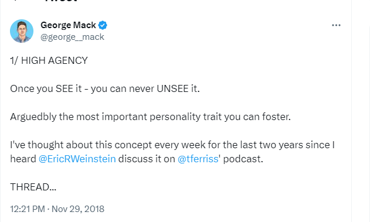

George Mack once tweeted that once you learn about the agency trait you can’t unsee it. I’m on the other side now and I couldn’t agree more.

Its the word I didn’t know I needed, one that captures everyone I used to describe as intense, original, go-getter, ambitious and the like. Simply put, high agency people are the kind of people who write their own story. Irrespective of what the world thinks, they go after what they want, get things done and claim their place in the world. You know one when you meet one because they ussually have interesting things to say.
Off the top of my head I can name a few. Candice Burt broke the world record by running ultra marathons for 200 consecutive days, Rosa Parks chose a simple yet powerful act of sitting knowing very well the consequences would be prison at best. Dr Paul Kalanithi chose to write a bestseller well aware it would likely be the last thing he did on this planet. High profile names aside, many more are within our reach. Everywhere you find them, they are ussually the initiators, the movers and shakers. I like spending time with these people; half of me identifies with them and the other half wants to be them.
We could all use more agency in our lives. Here’s why:

- History is written by high agency people.
Once upon a time there was a man named John. John went to school, raised a family and worked for the government till retirement. He lived a simple life and died a simple man. Great but have you heard of John? Yeah, me neither. The people you’ve heard about are people like Anne Frank, Harriet Tubman and Galileo Galilei. The ones who were stubborn enough to only reject the status quo but change it too. Even if you don’t aspire to change the world, agency will help you write a better story and that is a win in itself.
- Fulfillment.
A side effect of high agency is that priorities are always clear. When you know what you want and how to get there, its easy to distinguish opportunities from distractions. As a result, you spend more time filling your cup and feeling fulfilled. The perfect antidote for today’s world of noise, chaos and ambiguity.
While it seems that high agency people have it all figured out, that is far from the truth. Agency is not static; sure some people have genetic advantage but it can also be learnt. It also ebbs and flows across time, its easier to be a warrior on some days than others. Its a muscle that can be trained and here’s how:
Photo by David Iskander on Unsplash
-
Pick a cause(s). Anything you really care about fits the bill, preferably one that doesn’t harm others. The fewer, the better.
-
Commit. If you did the first step right, this part should be easy. Commit to your cause rain or shine and soon it will be clear which opportunities to pursue and which ones to let go.
-
Bring others on-board. Share your vision because that’s when its becomes real. Being able to convince others of your mission will not only fuel of your own convictions but also gather much needed support.
That’s it, just three practical steps. I think most of us don’t pursue agency because of fear. We are afraid of failure, rejection, struggle and the possiblity that we might actually succeed. High agency people feel the fear but do it anyway, they know subconsiously that the reward for risk is way more than comfort. Sometimes that reminder is all we need. So, now that you have a sharp eye for agency, I hope you seek it, exercise it and live your best life because the alternative is not any better.